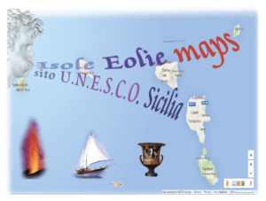
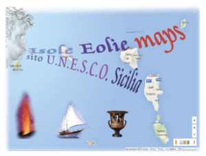

Si sà che le donne romane delle classi superiori dovevano essere colte, forti di carattere, ed attive nell’impegnarsi a mantenere la posizione del proprio clan familiare e protagoniste nella società civile. Il mosaico pavimentale del secondo cubicolo presenta al centro il ritratto di una coppia con una donna con abiti succinti, che dimostra la normalità di scenari scandalosi nella vita quotidiana romana.
La villa romana del Casale si trova a pochi chilometri dalla interessante cittadina di Piazza Armerina, ricca di strutture architettoniche barocche e tradizioni di origine normanne come il palio. Il parco Ronza si trova a pochi minuti di strada dalla cittadina ed è attrezzato con giochi per bambini tavoli e barbecue a legna.


 
